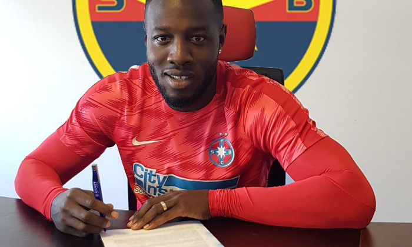
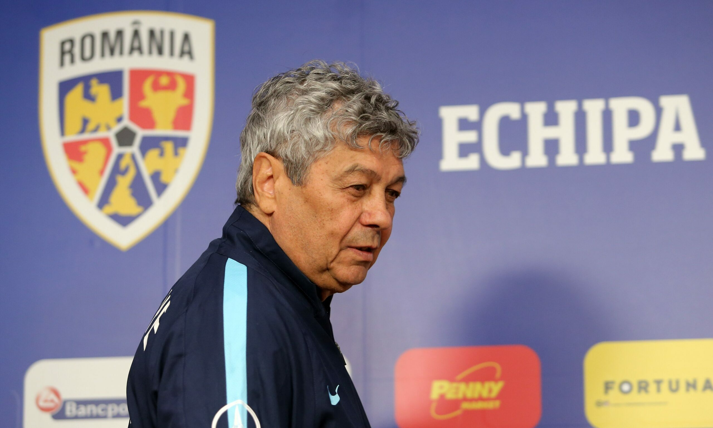

Bilete Liga 1 – Meciurile Săptămânii
Cele mai așteptate derby-uri și evenimente sportive, acum disponibile online.
Vezi MeciurileCele Mai Importante Meciuri Ale Etapei
FCSB vs. Rapid București
Dată: Sâmbătă, 25 Octombrie - 20:30
Stadion: Național Arena, București
CFR Cluj vs. Universitatea Craiova
Dată: Duminică, 26 Octombrie - 17:00
Stadion: Dr. C. Rădulescu, Cluj-Napoca
Știrile Săptămânii
Analiză după derby: "A fost un meci tacticizat"
Tehnicienii ambelor echipe s-au declarat mulțumiți cu rezultatul de egalitate, 0-0...
Citește mai mult »

Mutare de ultimă oră! Atacantul X semnează cu Dinamo
După mai multe săptămâni de negocieri, clubul a anunțat oficial transferul jucătorului...
Citește mai mult »

Selecționerul a anunțat lotul pentru meciurile viitoare
Lista include două nume noi și marchează revenirea unui veteran în lotul echipei naționale...
Citește mai mult »